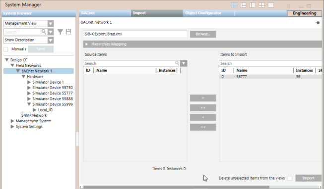

APOGEE BACnet Field Panel Database Overview
This section discusses two topics: Hierarchies/Views and The Import Tab.
Hierarchies/Views
The Desigo CC Export Utility reads a BACnet field panel database and displays all of its devices and objects in two hierarchies, or views. These hierarchies correspond to the logical and physical views in Desigo CC .
- Logical view: Displays BACnet data points and subpoints that are in the database. The visual layout of these objects is based on the point naming convention of the object. If the point naming convention is not followed, the points are added to the Local IO folder.
- Physical view: Displays the physical devices and their objects. When the Local IO folder is expanded, the objects residing in the device display. Unbundled data points are displayed under the FLN device, rather than under the field panel.
The Import Tab
You import BACnet data using the Import tab in System Manager. The following graphic shows BACnet Network1 in System Browser with several field panels already imported. The Import tab shows a field panel that is about to be imported and then added to BACnet Network 1.
